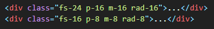
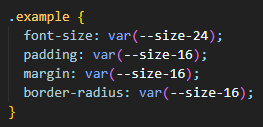

We've created a responsive 'size system' and applied it to all classes. Without any extra
effort, all pixel values will automatically scale down to a ratio of 0.81 below the tablet breakpoint of
767px, achieving a fully responsive appearance automatically.
The provided values for font size, margin, padding, gap, radius, etc., will scale down by a factor of
0.81,
and there will be no need to write individual media queries.

"You can check this text 767px for example..."
"You can check this text 767px for example..."
// Additionally, in the CSS file, you can use these values from 1 to 50.

// The provided values will scale responsively down.